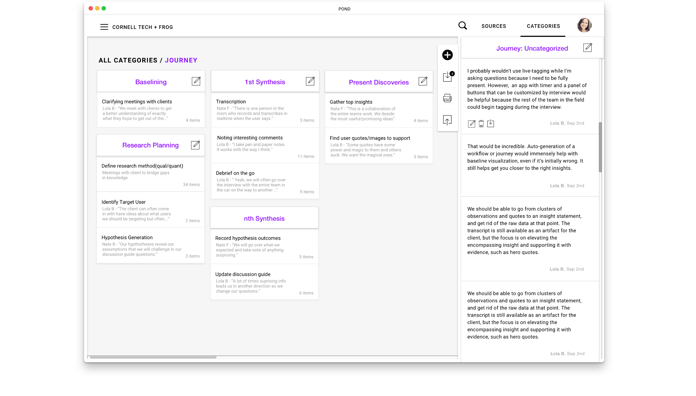

Pond
PRODUCT DEVELOPMENT
A nifty tool for qualitative research,
Pond helps design researchers focus on being creative by transcribing interviews and providing a flexible platform for collaborative synthesis.
Working with 3 graduate students from Cornell Tech, I dove into design research, product development and front-end development while championing the UX/UI design.
As part of the company challenges in Product Studio at Cornell Tech, frog design asked, "How might we use sensors or wearables to enhance a design
researchers ability to draw more valuable insights while in the field?"
In 14 weeks, we went from knowing little about design research to developing a narrative complete product that has
sparked interest from several venture capitalists and design research leads at companies such as The Knot, WeWork, Artsy & IBM.

Currently, design researchers manually transcribe hours of user interviews, eating up their valuable time. Pond allows them to automatically transcribe interviews with
a microphone and catch their raw impressions by simply pressing buttons on a customizable 'tag' remote, allowing them to be more present during the interview.
When they get back to the office, the interesting quotes are already separated from the irrelevant.
They can easily find and play back the audio they want and edit the transcription if there was an error.

Acting as home for all this data, Pond allows users to move seamlessly between synthesising in the physical world and online.
The user can categorize the quotes with drag-and-drop on the interface or print them to post-it-notes so that there is space to spread out.
When they are finished grouping the insights, they can then bring the categorized groups back into Pond by taking photos of the QR codes on the post-it notes.

With all the quotes organized digitally, it is then easy to find specific quotes to use in pitches to the project stakeholders. It also helps research and development teams stay on the same page.


We were asked - out of 36 teams in the course - to represent Cornell Tech in front of the New York tech community at their annual Open Studio. We pitched our product and explained our journey in 4 minutes. I also created a poster about Pond for the event.
There is currently an article being penned about us for the Cornell Tech website.